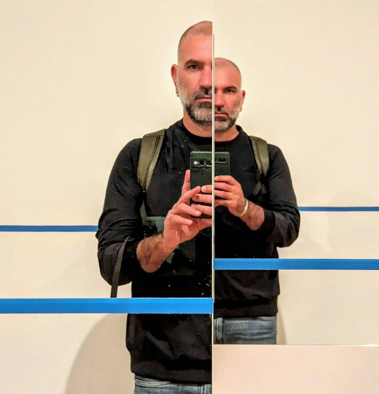
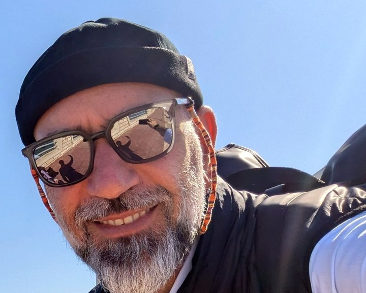

Chi sono
Mi definisco un ingegnere neuroscienziato prestato al mondo dell’hotellerie. Siciliano, studente fuori sede a Pisa, poi ricercatore ad Anversa. Quindi la scelta di tornare a casa, a San Vito Lo Capo, per gestire l’azienda di famiglia di mia moglie: più che un cervello di rientro, un (quasi) cervello senza fissa dimora. Oggi sono imprenditore, consulente e formatore, e non saprei dire dove finisce un ruolo e comincia l’altro. A tenerli insieme è sempre lo stesso filo: il rigore del metodo scientifico e i numeri che mi guidano.

Il percorso
- 2008 Laurea in Ingegneria Biomedica, Università di Pisa
- 2012 Laurea specialistica in Ingegneria Biomedica, Università di Pisa, con tesi alla Scuola Superiore Sant’Anna
-
2012–2016
Dottorato in neuroscienze all’Università di Anversa (Belgio), con borsa europea Marie Curie
Scopri il percorso scientifico - dal 2017 Manager di Seasanvito, San Vito Lo Capo
- 2019 Docente nei corsi di formazione per il personale delle imprese turistiche del territorio
- dal 2025 Consulente per lo sviluppo aziendale
Il mio modo di lavorare
- Rigore da ricercatore
- Metodo, ordine e tracciabilità: basi documentali strutturate, processi per fasi, verifica prima della consegna.
- Traduzione tra mondi
- Navigo tra documenti e definizioni complessi e specialistici, e li rendo accessibili a chi deve decidere, lavorare o imparare.
- Precisione delle affermazioni
- Distinguo ciò che è documentato da ciò che è supposto: è la base della credibilità.
- Problem solving
- Cerco la risposta migliore a situazioni critiche e spesso nuove, anche all’interno di team complessi.
- Visione coerente
- Impresa, consulenza e impegno civico orientati alla sostenibilità ambientale e sociale.
Impegno civico
Far crescere le attività senza consumare i luoghi e le persone che le rendono possibili vale anche fuori dall’azienda. Per questo sono attivo nell’associazionismo del mio territorio: come attivista di Legambiente mi occupo di tutela ambientale e di dialogo con le amministrazioni locali, e partecipo alla vita sociale e politica della mia comunità.
Oltre il lavoro
Fuori dal lavoro mi trovi in mountain bike o a piedi lungo i sentieri, con la macchina fotografica in mano oppure ai fornelli. E sempre con un libro in lettura.

Se pensi che questo modo di lavorare possa servire alla tua azienda, parliamone.
Il primo colloquio conoscitivo è gratuito.